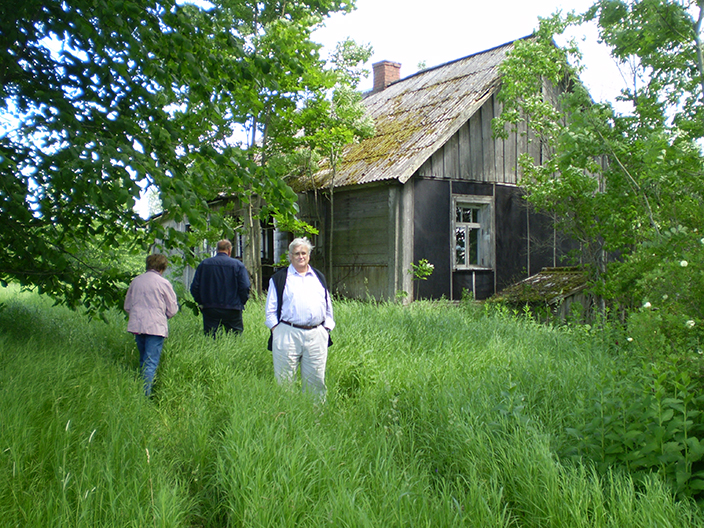
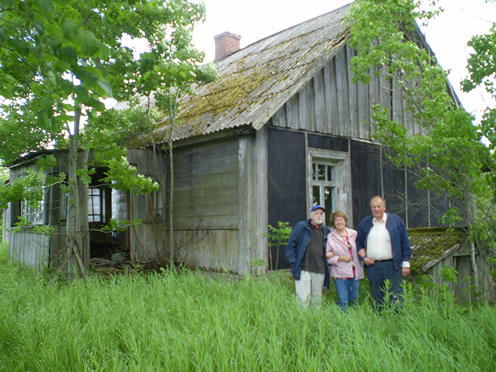
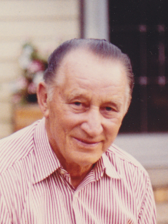

He always grieved that it would never be possible to go back to Skuķi and indeed just before the unimaginable happened and he could go back, he died. In 1991 the Soviet empire collapsed and Latvija was free again. It was possible to travel there without any restrictions and in 2008 I went back in his stead, accompanied by Ādolfs, Gunta and Ārijs.



Roads go ever ever on
Under cloud and under star,
Yet feet that wandering have gone
Turn at last to home afar.
Eyes that fire and sword have seen
And horror in the halls of stone
Look at last on meadows green
And trees and hills they long have known.[*]